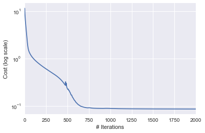

import autograd.numpy as np
import pandas as pd
import matplotlib.pyplot as plt
import seaborn as sns
from matplotlib.animation import FuncAnimation
from matplotlib import gridspec
%matplotlib inlineIn a previous post, we had seen how to perfom non-negative matrix factorization (NNMF) using Tensorflow. In another previous post, I had shown how to use Adagrad for linear regression. This current post can be considered an extension of the linear regression using Adagrad post. Just for the purpose of education, I’ll poorly initialise the estimate of one of the decomposed matrix, to see how well Adagrad can adjust weights!
Customary imports
Creating the matrix to be decomposed
A = np.array([[3, 4, 5, 2],
[4, 4, 3, 3],
[5, 5, 4, 3]], dtype=np.float32).TMasking one entry
A[0, 0] = np.NANAarray([[ nan, 4., 5.],
[ 4., 4., 5.],
[ 5., 3., 4.],
[ 2., 3., 3.]], dtype=float32)Defining the cost function
def cost(param_list):
W, H = param_list
pred = np.dot(W, H)
mask = ~np.isnan(A)
return np.sqrt(((pred - A)[mask].flatten() ** 2).mean(axis=None))Decomposition params
rank = 2
learning_rate=0.01
n_steps = 10000Adagrad routine
def adagrad_gd(param_init, cost, niter=5, lr=1e-2, eps=1e-8, random_seed=0):
"""
param_init: List of initial values of parameters
cost: cost function
niter: Number of iterations to run
lr: Learning rate
eps: Fudge factor, to avoid division by zero
"""
from copy import deepcopy
from autograd import grad
# Fixing the random_seed
np.random.seed(random_seed)
# Function to compute the gradient of the cost function
grad_cost = grad(cost)
params = deepcopy(param_init)
param_array, grad_array, lr_array, cost_array = [params], [], [[lr*np.ones_like(_) for _ in params]], [cost(params)]
# Initialising sum of squares of gradients for each param as 0
sum_squares_gradients = [np.zeros_like(param) for param in params]
for i in range(niter):
out_params = []
gradients = grad_cost(params)
# At each iteration, we add the square of the gradients to `sum_squares_gradients`
sum_squares_gradients= [eps + sum_prev + np.square(g) for sum_prev, g in zip(sum_squares_gradients, gradients)]
# Adapted learning rate for parameter list
lrs = [np.divide(lr, np.sqrt(sg)) for sg in sum_squares_gradients]
# Paramter update
params = [param-(adapted_lr*grad_param) for param, adapted_lr, grad_param in zip(params, lrs, gradients)]
param_array.append(params)
lr_array.append(lrs)
grad_array.append(gradients)
cost_array.append(cost(params))
return params, param_array, grad_array, lr_array, cost_arrayRunning Adagrad
Fixing initial parameters
I’m poorly initialising H here to see how the learning rates vary for W and H.
np.random.seed(0)
shape = A.shape
H_init = -5*np.abs(np.random.randn(rank, shape[1]))
W_init = np.abs(np.random.randn(shape[0], rank))
param_init = [W_init, H_init]H_initarray([[ -8.82026173, -2.00078604, -4.89368992],
[-11.204466 , -9.33778995, -4.8863894 ]])W_initarray([[ 0.95008842, 0.15135721],
[ 0.10321885, 0.4105985 ],
[ 0.14404357, 1.45427351],
[ 0.76103773, 0.12167502]])# Cost for initial set of parameters
cost(param_init)11.651268820608442lr = 0.1
eps=1e-8
niter=2000
ada_params, ada_param_array, ada_grad_array, ada_lr_array, ada_cost_array = adagrad_gd(param_init, cost, niter=niter, lr=lr, eps=eps)Cost v/s # iterations
pd.Series(ada_cost_array).plot(logy=True)
plt.ylabel("Cost (log scale)")
plt.xlabel("# Iterations")
Final set of parameters and recovered matrix
W_final, H_final = ada_params
pred = np.dot(W_final, H_final)
pred_df = pd.DataFrame(pred).round()
pred_df| 0 | 1 | 2 | |
|---|---|---|---|
| 0 | 5.0 | 4.0 | 5.0 |
| 1 | 4.0 | 4.0 | 5.0 |
| 2 | 5.0 | 3.0 | 4.0 |
| 3 | 2.0 | 3.0 | 3.0 |
Learning rate evolution for W
W_lrs = np.array(ada_lr_array)[:, 0]W_lrs = np.array(ada_lr_array)[:, 0]
fig= plt.figure(figsize=(4, 2))
gs = gridspec.GridSpec(1, 2, width_ratios=[8, 1])
ax = plt.subplot(gs[0]), plt.subplot(gs[1])
max_W, min_W = np.max([np.max(x) for x in W_lrs]), np.min([np.min(x) for x in W_lrs])
def update(iteration):
ax[0].cla()
ax[1].cla()
sns.heatmap(W_lrs[iteration], vmin=min_W, vmax=max_W, ax=ax[0], annot=True, fmt='.4f', cbar_ax=ax[1])
ax[0].set_title("Learning rate update for W\nIteration: {}".format(iteration))
fig.tight_layout()
anim = FuncAnimation(fig, update, frames=np.arange(0, 200, 10), interval=500)
anim.save('W_update.gif', dpi=80, writer='imagemagick')
plt.close()
Learning rate evolution for H
H_lrs = np.array(ada_lr_array)[:, 1]
fig= plt.figure(figsize=(4, 2))
gs = gridspec.GridSpec(1, 2, width_ratios=[10, 1])
ax = plt.subplot(gs[0]), plt.subplot(gs[1])
max_H, min_H = np.max([np.max(x) for x in H_lrs]), np.min([np.min(x) for x in H_lrs])
def update(iteration):
ax[0].cla()
ax[1].cla()
sns.heatmap(H_lrs[iteration], vmin=min_H, vmax=max_H, ax=ax[0], annot=True, fmt='.2f', cbar_ax=ax[1])
ax[0].set_title("Learning rate update for H\nIteration: {}".format(iteration))
fig.tight_layout()
anim = FuncAnimation(fig, update, frames=np.arange(0, 200, 10), interval=500)
anim.save('H_update.gif', dpi=80, writer='imagemagick')
plt.close()